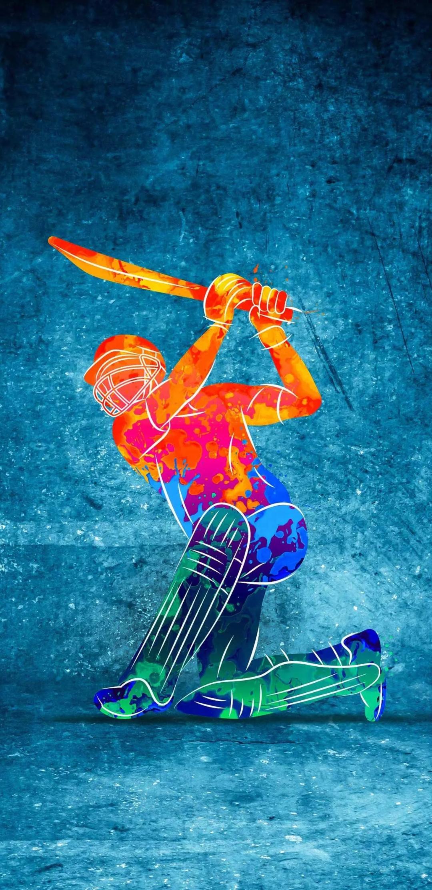
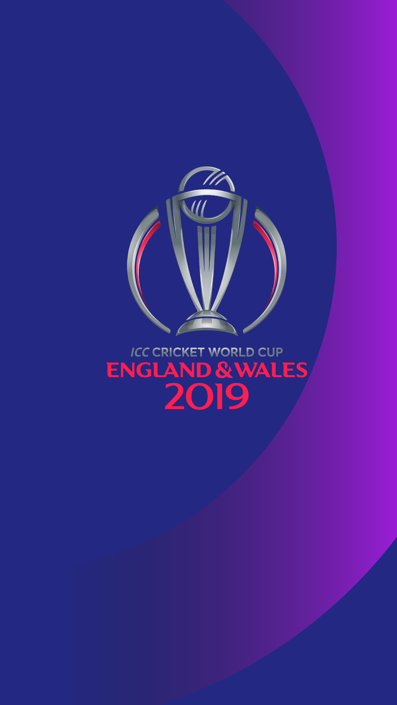
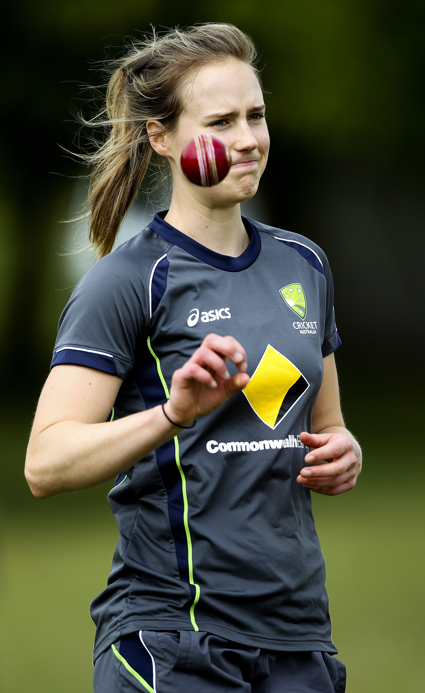
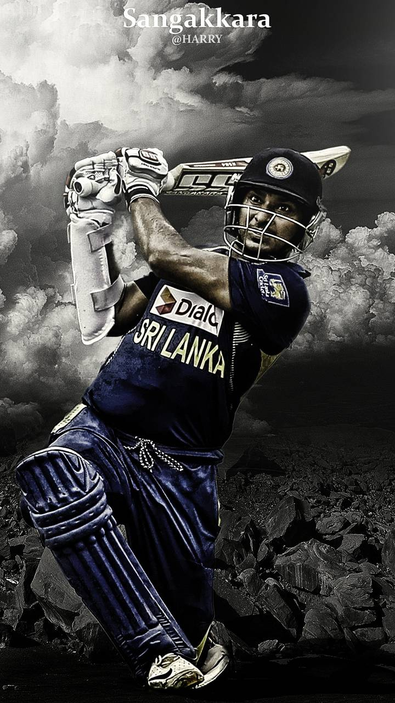

This page contains the images of all the recently released movies. It is very responsive as it will give description of the movies which you currently click on. It will provide you with the released date, ratings given by users, the cast of the movie and the synopsis of the movie. Go below to see the images.This is done in-order to make it convenient for the viewers to know about the movie in detail so they can watch the movie whole-heartedly.
Learn MoreCricket is believed to have originated in England in the 16th century and has since spread to become a global sport. The first international cricket match was played in 1844 between Canada and the United States, while the first official Test match was played in 1877 between England and Australia. The sport has seen many great players over the years, including Don Bradman, Sachin Tendulkar, and Viv Richards. Today, cricket is played in many different formats, including Test matches, One Day Internationals, and Twenty20 matches, with the sport's popularity continuing to grow around the world.
The ICC World Cup is an international cricket championship tournament held every four years. It features the top teams from around the world competing in a One Day International format. The tournament began in 1975 and has since become one of the most prestigious events in cricket. The current format features 10 teams competing in a round-robin and knockout format. The most successful team in the tournament's history is Australia with five titles, while the current champions are England, who won their first title in 2019.
Women's cricket is a growing sport that is gaining popularity around the world. The game is played with the same rules and equipment as men's cricket but with some minor modifications. The international women's cricket scene is dominated by teams from Australia, England, and India. The Women's Cricket World Cup is held every four years, with Australia winning the most titles. The sport has seen an increase in professionalism in recent years, with more opportunities for women to play at the highest level and earn a living from the sport.
Kumar Sangakkara is a former Sri Lankan cricketer who is widely regarded as one of the greatest batsmen in the history of the sport. He played as a wicketkeeper-batsman and holds numerous records in international cricket, including the most runs scored in ODI cricket by a left-handed batsman. Sangakkara is also known for his leadership skills and was appointed as the captain of the Sri Lankan cricket team in 2009. After retiring from cricket, he has taken up commentary and various administrative roles in the sport.
MS Dhoni is a former Indian cricketer and captain of the Indian national team. He is widely regarded as one of the greatest cricketing minds and finishers of all time. He led India to numerous victories, including the 2007 ICC World Twenty20, the 2010 and 2016 Asia Cups, and the 2011 ICC Cricket World Cup. Dhoni is also known for his calm demeanor and strategic acumen on the field. He retired from international cricket in August 2020, leaving behind a legacy that will be remembered for years to come.